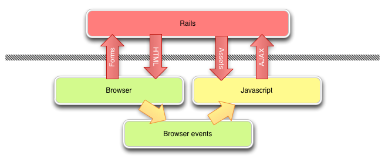
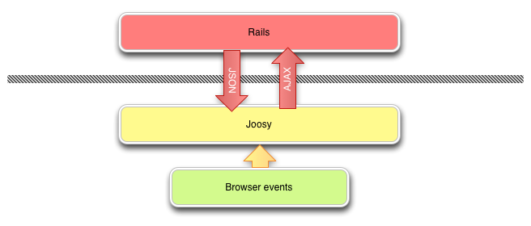
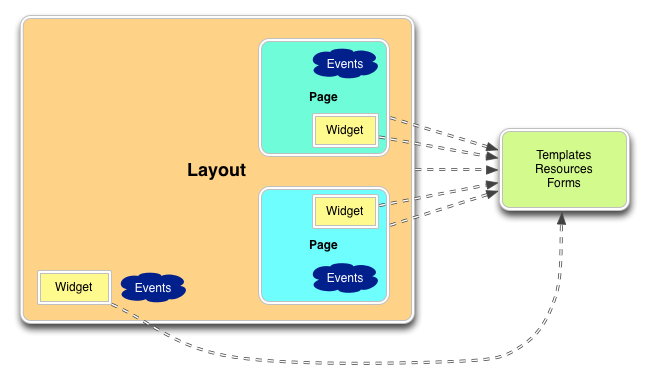
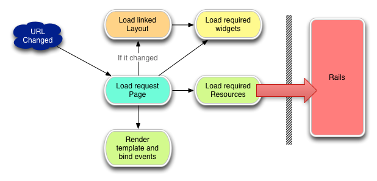
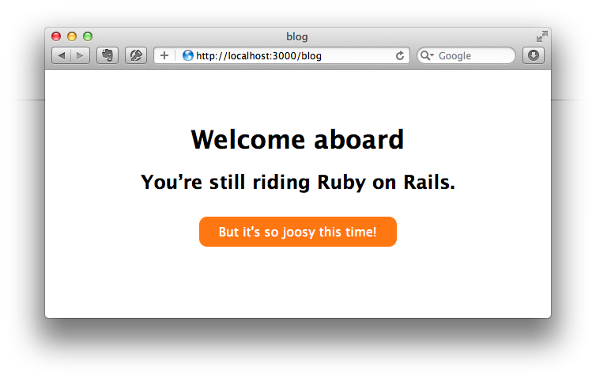

AngularJS, Director, Sammyjs, Backbone.js, Joosy, scaleApp, Spine.js, JavaScriptMVC, SproutCore, Ember.js, knockout.js, PureMVC
Достаточно молодой фреймворк, первый коммит датируется 23 декабря 11 года.
Разрабатывается компанией RoundLake (http://roundlake.ru) во главе со скандальным Борисом Безруковым (github:inossidabile)
Относительно быстрое принятие pull requests, от 2 дней до недели. Пилится активно и по сей день небольшой группой разработчиков.
Это типичная модель взаимодействия Rails и браузера:

Joosy берет на себя рендеринг HTML, навешивание событий и все что нужно для дальнейшей работы из браузера, получаем:

Позволяет знакомому с соглашением программисту быстро сориентироваться в коде.
Позволяет меньше думать о структуре файловой системы, наименовании переменных и прочих мелочах, сосредоточиться на быстром написании полезного кода
Все архитектурные моменты уже согласованы, не нужно ничего сочинять
А взамен получаем REST интерфейс для работы с ресурсами
Это значит что мы не увидим метода save(), все изменения в данных на сервере делаются либо через формы, либо через методы CRUD
Объясняется это авторами как: REST не есть SQL, а сервер к js клиенту не Реляционная СУБД. Поэтому низя использовать полноценно логику в Моделе => выпилена.
Joosy.namespace 'Post', ->
@IndexPage extends Joosy.Page
@view 'index'
.posts
- @posts.each (post) ->
.well
.title= post('title')
.body= post('body')
['three','two','one'].groupBy('length'); // {"5":["three"],"3":["two","one"]}
'[you] escape <me>'.escapeHTML(); // "[you] escape <me>"
(5).times(function() {
// Run 5 times
});
Date.create().is('tuesday'); // false|true

В Joosy центральным элементом является страница (Page). При очередном изменении адреса подгружается новая.
Каждая страница может иметь макет (Layout), который грузится один раз для первой, и не меняется, если у след тот же макет.

$ rails new jblog
gem 'joosy' group :assets do ... gem 'bootstrap-rails' gem 'anjlab-bootstrap-rails' gem 'font-awesome-sass-rails' ... end
@import 'bootstrap';
@import 'font-awesome';
body {
padding-top: 60px;
}
$ rails g joosy:application blog $ rails g joosy:preloader blog
$ rails s
И получаем

javascripts ├── blog │ ├── helpers │ │ └── application.js.coffee │ ├── layouts │ │ └── application.js.coffee │ ├── pages │ │ ├── application.js.coffee │ │ └── welcome │ │ └── index.js.coffee │ ├── resources │ ├── templates │ │ ├── layouts │ │ │ └── application.jst.hamlc │ │ ├── pages │ │ │ └── welcome │ │ │ └── index.jst.hamlc │ │ └── widgets │ ├── widgets │ └── routes.js.coffee ├── blog.js.coffee ├── blog_preloader.js.coffee.erb ├── blog_railties.js.coffee.erb └── application.js
Jblog::Application.routes.draw do match 'blog' => 'blog#index' end
Joosy.defineResources <%= Joosy.resources %>
<%= require_joosy_preloader_for 'blog', preloader: 'caching', force: false %>
bootstrap = ->
$('#preloader').remove()
Joosy.Application.initialize 'blog','#application',
environment: window.joosy.environment
debug: false
window.onload = ->
Preloader.load window.joosy.libraries,
complete: bootstrap
start: -> document.getElementById('preloader').style.display = 'block'
progress: (percent) -> document.getElementById('percents').innerHTML = percent + '%'
Joosy.Router.map
404 : (path) -> alert "Page '#{path}' was not found :("
'/' : Welcome.IndexPage
#page{:style => 'text-align: center'}
.content{:id => @yield()}
#wrapper
#content
%h1 Welcome aboard
%h2{:style => 'margin-bottom: 30px'} You’re still riding Ruby on Rails.
.joosy{:style => 'background: #F71; border-radius: 10px; width: 250px; display: inline-block'}
%div{:style => 'color: #FFF; padding: 10px;'}
But it's so joosy this time!
@ApplicationPage extends Joosy.Page
class @ApplicationLayout extends Joosy.Layout @view 'application'
Joosy.namespace 'Welcome', ->
class @IndexPage extends ApplicationPage
@layout ApplicationLayout
@view 'index'
@afterLoad ->
@startHeartbeat()
@content.css
'padding-top': "#{$(window).height() / 2 - 160}px"
elements:
content: '#content'
joosy: '.joosy'
events:
'mouseover $joosy': -> clearInterval @heartbeat
'mouseout $joosy': 'startHeartbeat'
startHeartbeat: ->
@heartbeat = @setInterval 1500, =>
@joosy.animate({opacity: 0.8}, 300).animate({opacity: 1}, 300)